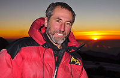

Cumplimos 5 Años… 5 años de ejercer el cambio con la esperanza de madurar y encontrar el camino
5 años de desafíos que hasta ese entonces nadie
había transitado
5 años inspirados en nuestra Cultura de Montaña
5 años de Aventuras y Desventuras
5 años Aprendiendo a aprender…
Agradecemos a todos aquellos que nos acompañaron y los que hoy nos acompañan
Simplemente Gracias por creer en nuestra Cultura
Gracias por Amar la Montaña…
- ULTIMA PUBLICACION DIGITAL Nº41 • JUNIO DEL 2013 -
- ULTIMAS NOTICIAS Y NOVEDADES DEL MES 2013 -
Actos de vandalismo en el Refugio Jakob de Bariloche, Provincia de Río Negro >>Leer más
Representantes del Club Andino Bariloche dijeron presente en el desfile de la Fiesta Nacional de la Nieve >>Leer más
Dos argentinos buscarán hacer cumbre en la montaña más difícil de escalar del mundo,
el legendario K2 >>Leer más
Fueron ejecutados 11 montañistas
en el campo base del Nanga Parbat >>Leer más
Proteger nuestro Patrimonio,
Arqueología e identidad >>Leer más
Entrevista al montañista ecuatoriano Iván Vallejo: “No quiero volver a un ochomil,
menos aún al Everest” >>Leer más
2° Jornadas Nacionales de Espeleología,
La Falda, Provincia de Córdoba >>Leer más
Los protagonistas de la serie Rescatistas pasaron por El Chaltén y El Calafate,
Provincia de Santa Cruz >>Leer más
La Provincia de Salta tendrá en el 2014 dos Patrimonios de la Humanidad >>Leer más
Cerro Torre, la montaña más visitada.
Provincia de Santa Cruz >>Leer más
Quieren inaugurar en julio el nuevo Refugio Berghof, Provincia de Río Negro >>Leer más
Se presento en Luján una Exposición Fotográfica de Montaña,
Provincia de Buenos Aires >>Leer más
Promueven ley nacional para guías de montaña >>Leer más
Presentaron los avances del programa "Qhapaq Ñan" Camino del Inca >>Leer más
Úrsula Díaz brindó una Charla en Buenos Aires sobre su experiencia personal en el Everest >>Leer más
- NOTICIAS DEL MES DE MAYO 2013 -
Un paracaidista ruso realiza el primer salto BASE desde el Everest >>Leer más

Alerta por la posible erupción del volcán Copahue, Provincia de Neuquén
>>Leer más
El montañista español, Juanjo Garra falleció en el Dhaulagiri durante el descenso >>Leer más
Una Cordada del Ejército Salta hizo cumbre en el Nevado de Chañi, Provincia de Jujuy >>Leer más
Un japonés de 80 años llega a la
cumbre del Everest >>Leer más
Entrevista con Douglas Tompkins quién donó a Argentina y Chile 850.000 hectáreas
>>Leer más
Hace 20 años una expedición argentina logró subir el Shisha Pangma en el Himalaya >>Leer más
Dos argentinos, una catamarqueña y un mendocino, hicieron cumbre
en el Monte Everest >>Leer más
Un montañista japonés de 80 años comenzó a escalar el Everest >>Leer más
Muere el montañista ruso Alexey Bolotov, compañero de Denis Urubko en el Everest >>Leer más
Douglas Tompkins donará la estancia privada El Rincón a Parques Nacionales >>Leer más
Presentación de la Exposición de Mauricio Bianchi en el Foto Club Tigre >>Leer más
El 18 de mayo se realizó una jornada de limpieza en el Cerro San Bernardo,
Provincia de Salta >>Leer más
Científicos chinos descubren otras 3 montañas de más de 8.000 metros de altura >>Leer más
Cinco montañistas muertos tras una erupción volcánica en Filipinas >>Leer más
Si querés ver las noticias de meses anteriores hacé clic acá
- OPORTUNIDAD -
- VIDEO DE MES DE JUNIO -
AL FILO DE LO IMPOSIBLE
LA TRÁGICA ASCENSIÓN AL K2 1194, PAQUISTÁN
Filmación del equipo de la TV Española "Al Filo de lo Imposible"
El 30 de julio de 1994 con el equipo de la TV Española de "Al filo de lo imposible", Sebastian de la Cruz, consiguió en compañía de José Carlos Tamayo llegar a la cima del K2 (8611 mts.), la segunda montaña más alta del mundo, siguiendo la compleja ruta japonesa del espolón norte. Tenía entonces 25 años y lo logró sin ayuda de oxígeno suplementario.
VIDEO I Si querés ver los otros videos hacé clic acá
- PUBLICIDAD -
El CCAM es una Institución argentina, fundada el 5 de julio del 2000 que tiene como misión difundir la Cultura de Montaña. Uno de nuestros objetivos es el de integrar a las diferentes regiones de nuestro país, generando una red, mediante la cual podamos enriquecernos y conocernos unos a otros.
El Revista Digital es una publicación virtual la cual se envía mensualmente desde el 2008 a la comunidad, actualmente estamos llegando a 40.000 personas por mes de Argentina, Chile, Brasil, México, Colombia, Perú, España y otros países.
En el Portal del CCAM participan hoy, un grupo de 16 personas, con una carga horaria de 160 horas mensuales, las tareas editoriales son: redacción, restauración fotográfica, diseño, edición de texto e imágenes, corrección, armado, publicación, administración y coordinación de tareas.
Para ver la última Revista Digital hacé >>Clic acá
Hay imágenes reproducidas en el Portal del CCAM y el Boletín Digital, que tienen el nombre de nuestra Institución para proteger la difusión de dicho material. Esto no implica que sean de autoría del Centro Cultural Argentino de Montaña, cada imagen cuenta con la referencia del autor.